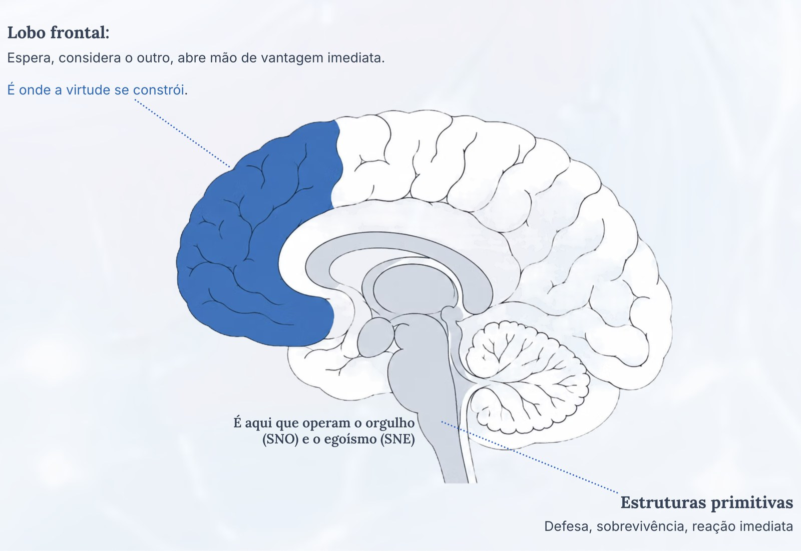

Virtologia · Aulas abertas
Aulas completas de Virtologia para assistir agora
Aulas reais com o Dr. Eduardo Casarotto, do jeito que aconteceram. Cada uma mostra uma parte da Virtologia por inteiro, com casos e exemplos de consultório.
A primeira é para quem está conhecendo a escola. A segunda aprofunda um tema que muda a forma de avaliar uma pessoa. Veja o que cada uma entrega e escolha por onde começar.
- como cada pessoa enxerga e reage ao que acontece
- o que adoece uma pessoa, segundo a Virtologia
- por que virtudes, e não qualquer neuroplasticidade
- como se monta um plano de trabalho
- as cinco partes da personalidade, e o que é fixo e o que muda
- os 12 eixos do temperamento, com mapas feitos ao vivo
- como não confundir temperamento com neurose
- por que o temperamento se equilibra com virtudes, e não se troca
Aula 1Comece por aqui
Como a neuroplasticidade de virtudes muda fisicamente o cérebro e estrutura a saúde mental
A fórmula PRF = (I × E) × FA × PO × PS × LV mostra como cada pessoa enxerga o que acontece e como reage. Com ela dá para descobrir o que está travado na pessoa e como tratar aquilo.
Nesta aula tirada da Formação em Virtologia, uma entre mais de 60, o Dr. Eduardo Casarotto apresenta a base da escola: o que constrói o jeito de uma pessoa enxergar e reagir, e por que mudar isso não é questão de entender, e sim de mudar a estrutura do cérebro. E, principalmente, qual estrutura precisa ser construída.
O que esta aula apresenta
Com casos reais de tratamento de automutilação e pensamento suicida usando exercícios de virtudes, a aula percorre a base da Virtologia: de como o ser humano funciona até o plano de trabalho no consultório.
Ninguém reage ao mundo. A gente reage à própria memória.
Toda palavra, cena ou lembrança puxa junto um monte de coisas que a pessoa já viveu. A palavra "casamento" não chega sozinha: ela vem com o casamento dos pais, com o que deu errado antes, com o que ela ouviu a vida inteira sobre isso. No cérebro isso são redes neurais: grupos de neurônios que foram se ligando uns aos outros a cada experiência e que hoje disparam juntos. Por isso duas pessoas ouvem a mesma frase e sentem coisas opostas. E por isso explicar não muda: a explicação não chega até onde a rede está.
O que a Virtologia altera, e o que não tenta alterar
A memória não se reescreve. O que muda é como a pessoa a percebe e reage a ela. A aula mostra por que tentar dar um novo significado ao passado do paciente é, para a Virtologia, o erro mais comum do consultório.
A diferença entre se controlar e funcionar
Quem se segura por regra continua sentindo a mesma coisa. Só não age. A aula mostra como perceber, na fala do paciente, a diferença entre a virtude construída e a virtude de fachada, e por que o sintoma denuncia essa diferença mesmo quando a fala não denuncia.
A Lei do Fluxo: PRF = (I × E) × FA × PO × PS × LV
A fórmula com que a Virtologia lê uma pessoa inteira, letra por letra, e o que cada uma explica.
As necessidades humanas e o tanque
As 51 necessidades humanas não são gosto nem cultura, e vão mudando conforme o cérebro da pessoa se desenvolve. Cada uma tem uma reserva, que a Virtologia chama de tanque, e ela não pode secar nem transbordar. Os dois extremos geram sintoma, e é aí que boa parte da clínica confunde doença com necessidade em falta.
Aplicação em unidade prisional
O caso de uma interna que chegou ao programa se cortando e com tentativa de suicídio, e o que mudou depois de três virtudes trabalhadas com exercícios. Tem registro em vídeo e o relato do professor que conduziu o trabalho.
Como se monta um plano de trabalho
Três coisas apontando para o mesmo lado: em que ponto o cérebro da pessoa está, qual necessidade alimentar agora, e qual virtude construir junto. É o ponto em que a aula sai da teoria e entrega método.
A aula é corrida, e um assunto se apoia no outro.
Depois desta, siga para a Aula 2: o que é fixo e o que muda na personalidade
Aula 2Para aprofundar · Dada ao vivo em 19/11/2026
Quando a terapia começa a apagar a personalidade do paciente?
Como distinguir o que é fixo e o que é mutável na personalidade humana
Quem não sabe avaliar temperamento pode chamar de neurose o que é só o jeito de a pessoa ser. E, ao tentar corrigir, empurra a pessoa para longe de quem ela é.
Nesta aula, dada ao vivo em 19 de novembro de 2026, o Dr. Eduardo Casarotto retoma a formação da personalidade peça por peça, mostra com casos de consultório onde a avaliação costuma errar e monta, ao vivo, o mapa de temperamento de participantes da turma. É a aula para quem já conhece a base e quer avaliar uma pessoa sem confundir traço com sintoma.
O vídeo desta aula entra aqui em breve.
O que esta aula apresenta
A personalidade tem cinco partes
Identidade, psique, caráter, temperamento e virtudes. A soma das cinco é a personalidade, que é o jeito como a pessoa se movimenta no mundo. Só uma delas vem pronta e não se troca: o temperamento. As outras se constroem e continuam mudando a vida inteira.
Saber o que é fixo e o que muda é o que impede a terapia de tentar mudar o que não muda.
A identidade muda, e a personalidade muda junto
Nome, corpo, idade, signo e cidade de origem compõem a identidade. A aula mostra o que acontece quando o corpo muda muito, como depois de uma cirurgia bariátrica ou com as canetas de emagrecimento: quem passou anos compensando para ser aceita deixa de compensar, e as relações mudam junto.
E, como a comida é o meio de quase toda relação, o pulo do gato é aprender a manter as relações sem ela.
Como o caráter se constrói
Cada atitude da criança é reforçada, modificada ou inibida pelo meio. O cérebro não calcula certo e errado: calcula amor e punição, ganho e perda.
O menino que lavou o carro do pai com palha de aço para ajudar, e apanhou, não aprendeu a cuidar do carro. Aprendeu que ser prestativo dá punição.
A mesma dor, temperamentos diferentes, defesas diferentes
São 12 eixos de temperamento, herdados. Duas crianças rebaixadas do mesmo jeito se defendem de formas opostas: a não inibida vai para o palco buscar a atenção que faltou, a inibida se esconde para não ser excluída de novo.
A mesma ferida pode virar defesas muito diferentes, conforme o temperamento, e a aula mostra por quê.
Chamar temperamento de neurose
Uma mulher de temperamento masculino, objetiva e voltada a resultado, ouve do terapeuta que precisa ser mais feminina. Uma mulher deslumbrada, que gosta de brilho e de se expressar, é chamada de carente por um terapeuta cético e simples. Nos dois casos, o que se corrige é o temperamento. E não tem nada a ver com sexualidade.
O que separa traço de neurose é o quanto o olhar do outro é ameaça para a pessoa, e é isso que a aula ensina a ler.
O mapa de temperamento, feito ao vivo
Participantes respondem ao teste dos 12 eixos durante a aula, e o Dr. Eduardo Casarotto lê os resultados na hora. Entra o quadrante pensador e fazedor, simples e complexo, com o criativo, o prático, o dinâmico e o idealista. E a régua: três a dois é equilíbrio, quatro a um é a beira, cinco a zero é desequilíbrio.
Dentro do próprio temperamento a pessoa ganha energia. Fora dele, perde.
Nenhuma atitude vem de um lugar só
Uma atitude nasce do temperamento cruzado com valores e crenças, com a Faixa de Evolução neurológica, com as necessidades do momento, com a falta que vira desejo e com a fase de vida. A persona não é outra personalidade: ela está dentro da personalidade. E quanto maior o orgulho, maiores o superego e a persona.
Quem olha só uma dessas peças erra a avaliação da pessoa inteira.
Temperamento não se troca: equilibra-se com virtudes
Ninguém trabalha temperamento no consultório. Um dominante sem abnegação vira estrela. Com humildade e abnegação, ele continua no comando, mas a serviço dos outros.
Quem equilibra o temperamento é a virtude, e é por isso que a escola se chama Virtologia. A aula fecha com a ordem do trabalho: humildade e abnegação primeiro.
Até o manejo depende disso. O fazedor elabora com tarefa prática, o pensador elabora pela ideia. Quem não sabe com que temperamento está falando escolhe a técnica errada.
O objetivo de tudo é não violentar: não chamar de neurose o que é temperamento, nem chamar de qualidade o que é neurose.
O que dizem os profissionais que já estão tratando com a Virtologia?
Psicólogos, psicanalistas e terapeutas de outras linhas estudaram a Virtologia e passaram a trabalhar com ela:
"Melhorou o pânico e a ansiedade da minha paciente em apenas 14 dias."
Dâmaris · Psicóloga clínica
"Não tem como não falar que é revolucionário. Depois que você conhece, não tem como não trabalhar com isso."
Carina · Neuropsicopedagoga, psicanalista e terapeuta ABA
"É libertador. Para consultório, foi uma revolução e tanto."
Fernanda · Psicóloga clínica (TCC)
"A Virtologia é o 'como' de todas as terapias. Linguagem fácil, compreensível, onde qualquer um pode fazer."
Grace Campos · Psicanalista
"Quando você vai percebendo, você vê que aquela não é mais a mesma pessoa que comecei a atender."
Dinorá · Psicóloga especialista em autismo
"Quando você vê, você já está agindo. Muito mais rápido e pontual do que outras terapias."
Rosa · Psicóloga
O que adoece uma pessoa
O cérebro humano não é uma coisa só. Ele tem camadas que se formaram em momentos diferentes da evolução da espécie.
As estruturas primitivas existem há milhões de anos e são dedicadas à sobrevivência imediata: defender-se, garantir o próprio lugar, reagir antes de pensar. O lobo frontal, a parte da frente do cérebro, é a última que apareceu na história da espécie e a última que amadurece em cada pessoa. É ela que permite esperar, considerar o outro e abrir mão de uma vantagem imediata.
Num cérebro bem desenvolvido, a parte da frente coordena as primitivas. O adoecimento começa quando o sistema primitivo comanda e o resto passa a servi-lo.
A Virtologia identificou que esse comando primitivo se organiza em torno de duas coisas, e deu nome às duas: o sistema do orgulho, o SNO, que faz a pessoa viver defendendo o lugar dela na frente dos outros, e o sistema do egoísmo, o SNE, que faz tudo virar conta de quanto eu ganho com isso.
Quando eles mandam, a pessoa se defende. A defesa se repete, endurece e vira uma casca permanente, que a Virtologia chama de couraça. A couraça, vista de fora, é o que os manuais chamam de transtorno de personalidade.
Por isso o virtólogo não parte do sintoma. Diante de um padrão, ele não pergunta primeiro qual é o transtorno. Pergunta do que a pessoa se defende, e qual virtude falta para que ela não precise mais daquela defesa.
Condições que têm origem genética, como esquizofrenia, transtorno bipolar e autismo, não vêm daí, e a Virtologia não diz o contrário. Qualquer pessoa, com ou sem essas condições, também pode estar com o cérebro no modo primitivo. E nessa parte o trabalho ajuda igual, sempre junto com o cuidado médico.

Por que virtudes, e não qualquer neuroplasticidade
Neuroplasticidade é a capacidade que o cérebro tem de mudar com o que a pessoa repete. E ela não escolhe lado: constrói tanto o que faz bem quanto o que adoece. O cérebro aprende a desconfiar de todo mundo com a mesma facilidade com que aprende qualquer outra coisa. Saber que o cérebro muda não diz nada sobre para onde ele deveria mudar.
Se o que adoece é o comando primitivo, o que precisa ser construído é o que o desmonta. É aí que a Virtologia responde a pergunta que quase ninguém fez: construir o quê?
A resposta é o que dá nome à escola. Virtude, aqui, não é valor moral nem discurso bonito. É um grupo de ideias que, treinado com exercícios específicos, constrói caminho novo no cérebro. Humildade, aceitação, perdão e abnegação deixam de ser coisas que a pessoa tenta fazer e passam a ser o jeito como ela funciona sem pensar.
Não é segurar o orgulho e o egoísmo com força. Quem segura continua sentindo a mesma coisa, só não age. É diminuir o peso que o próprio cérebro dá a eles, até que a resposta orgulhosa ou egoísta simplesmente pare de vir.
Quem se controla ainda sente. Quem construiu a estrutura já não sente.
Junto com os caminhos, muda a química. A dopamina, que é o mensageiro do prazer e da recompensa, passa a se ligar mais ao vínculo verdadeiro e menos ao status. A serotonina, ligada ao controle dos impulsos, sustenta melhor a pausa antes da reação. O cortisol, o hormônio do estresse, deixa de manter o corpo em estado de defesa permanente. E a oxitocina, ligada ao vínculo, sustenta as relações.
Isso acontece porque mente, sistema nervoso, hormônios e sistema de defesa do corpo não são coisas separadas. Funcionam como uma rede só. Treinar virtude é, ao mesmo tempo, treinar essa rede inteira.
Daí vem a ideia central da Virtologia: a saúde mental é o que se estabelece quando um cérebro deixa de funcionar a serviço do próprio orgulho e egoísmo. Ansiedade, depressão, compulsão e relações que adoecem não são tratadas apesar disso. São tratadas por causa disso.
Não se pula degrau
Falta a peça que impede tudo isso de virar conselho de autoajuda.
Não se constrói qualquer virtude em qualquer pessoa. Existe uma sequência, e ela não pode ser pulada. Cobrar de alguém uma maturidade que o cérebro dele ainda não sustenta não acelera nada. Só gera frustração, e nada fica gravado.
As faixas de evolução neurológica descrevem em que regime o cérebro está operando, e é a leitura da faixa que diz qual é o próximo degrau possível e qual virtude o abre. É isso que separa método de conselho, e é o que a aula mostra no plano de trabalho.
Faixa não mede o valor de ninguém. Ela descreve como o cérebro está funcionando, muda de área para área, e pode subir e descer.
Sobre o que a Virtologia afirma
As partes do cérebro envolvidas e o que cada uma faz já são descritas pela neurociência. O que a Virtologia acrescenta é a organização dessas funções em dois sistemas, o do orgulho e o do egoísmo. É proposta original da escola, formulada de um jeito que pode ser testada e verificada em exame de imagem.
Quem conduz as aulas
Eduardo Casarotto é pesquisador independente, fundador do Instituto Virtudes e fundamentador da Virtologia, escola brasileira dedicada a estudar como o ser humano funciona e a desenvolver virtudes usando a capacidade do cérebro de mudar.
Há mais de duas décadas pesquisa personalidade, comportamento e desenvolvimento humano, sendo autor de mais de 20 livros e de artigos científicos publicados em revistas científicas.
O trabalho dele já chegou a universidades, consultórios, órgãos públicos e instituições, foi apresentado no Senado Federal e tem aplicações em consultórios, educação, organizações e unidades prisionais.
Profissionais de outras escolas, e o que as fez ficar
“Não tem como não falar que é revolucionário. Depois que você conhece, não tem como não trabalhar com isso.” Carina · Neuropsicopedagoga, psicanalista e terapeuta ABA
“É libertador. Para consultório, foi uma revolução e tanto.” Fernanda · Psicóloga clínica (TCC)
“A Virtologia é o ‘como’ de todas as terapias. Linguagem fácil, compreensível, onde qualquer um pode fazer.” Grace Campos · Psicanalista
“Quando você vai percebendo, você vê que aquela não é mais a mesma pessoa que comecei a atender.” Dinorá · Psicóloga especialista em autismo
“Quando você vê, você já está agindo. Muito mais rápido e pontual do que outras terapias.” Rosa · Psicóloga
“Melhorou o pânico e a ansiedade da minha paciente em apenas 14 dias.” Dâmaris · Psicóloga clínica
Como se tornar um especialista em Virtologia
Estudar Virtologia você já está fazendo agora. A Formação é outra coisa: é o caminho de quem vai dominar o método inteiro e aplicar com segurança, no consultório ou dentro de uma instituição.
São mais de 60 aulas com a profundidade destas, do fundamento à técnica. E junto com elas, tira-dúvidas por escrito abaixo de cada aula e um encontro ao vivo por mês com Eduardo Casarotto. Não é conteúdo para assistir sozinho. É formação conduzida por quem já aplica.
O programa, o formato e os valores são apresentados em conversa pelo WhatsApp:
Saber mais sobre a Formação em VirtologiaPara quem prefere examinar a tese antes, o livro Fundamentos da Virtologia reúne a base inteira da escola. Muitos dos que hoje estudam na Formação chegaram por ele.
O que costumam perguntar
Em que ordem devo assistir?
Comece pela Aula 1, que apresenta a base da Virtologia: como a pessoa enxerga e reage, o que adoece e por que virtudes. A Aula 2 parte dessa base e aprofunda a formação da personalidade, com o temperamento no centro.
Posso participar da próxima aula ao vivo?
Pode. A inscrição é gratuita e fica logo abaixo da Aula 2. Depois de se inscrever, você entra no grupo da aula, onde enviamos o link do Zoom e os avisos. Na aula ao vivo, você pode fazer perguntas diretamente ao Dr. Eduardo Casarotto.
Isso é uma coisa científica?
A Virtologia se define como escola clínico-filosófica com base científica. Ela formula o que afirma de um jeito que pode ser testado, dizendo o que confirmaria e o que derrubaria cada hipótese, dialoga com a neurociência e publica artigos em revistas científicas. Os casos mostrados na aula são registros de aplicação real, documentados em vídeo, e a escola apresenta eles como sendo isso.
As virtudes são uma proposta moral?
Não. Na Virtologia, virtude é uma capacidade construída no cérebro, não um valor para a pessoa adotar. O que se avalia não é se alguém concorda com uma ideia, e sim se o cérebro dele passou a funcionar de outro jeito. E isso aparece no sintoma, não no discurso.
A Virtologia substitui acompanhamento médico?
Onde existe determinação biológica, como na psicose, no transtorno bipolar e no autismo, o trabalho é somado ao tratamento médico e nunca fica no lugar dele. Onde o sofrimento vem de defesa construída ao longo da vida, o trabalho virtológico é o próprio tratamento.
Como funciona a Formação em Virtologia?
São mais de 60 aulas, do fundamento à técnica, com acompanhamento ao longo de todo o caminho. Programa, formato e valores são apresentados na conversa pelo WhatsApp, sem compromisso.